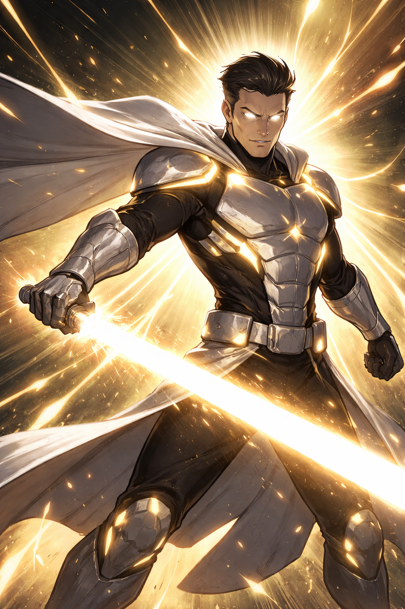

Adrian Korr was a military engineer tasked with developing photonic energy weapons for the same consortium that created UmbraFlux. After the collapse of the Umbral Project,
the consortium needed a symbol of control. Adrian volunteered for an extreme experiment: fusing his body with a core of solid light.
The process worked… too well. His body became a perfect conductor of luminous energy, but his mind turned rigid, obsessed with order and absolute purity.
His power depends on a constant energy source. In low-light environments or during prolonged combat, his body begins to fracture.
Cold, disciplined, and inflexible. He believes the world can only be saved by eliminating moral ambiguity. To him, UmbraFlux is not a person, but a mistake that must be corrected.
